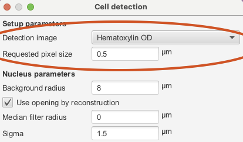

Introduction to QuPath
Peter Sobolewski (he/him)
Systems Analyst, Imaging Applications
Research IT

Lesson Plan
- Brief introduction to QuPath
- Key concept: Projects
- QuPath GUI layout and toolbars
- Making & Managing Annotations
- Setting stain Vectors
- Pixel classification using a thresholder
What is QuPath?
QuPath is an open-source image analysis program
Key feature:
QuPath has a graphical user interface (GUI) for performant working with very large 2D images, like those produced by slide scanners
A bit of background
- project was started at The Queen’s University Belfast by Pete Bankhead
- first public release was in October 2016
- currently developed by Pete Bankhead’s group at The University of Edinburgh
- >7500 publications using QuPath
If you use it, cite it!
Strengths of QuPath
Was designed for very large, multiscale 2D files
Includes extensive annotation, overlay, and visualization options
It includes robust algorithms for common analysis tasks
It includes interactive machine learning for pixel and object classification
Recordable workflows allow for easy batch processing
Integrated ImageJ
Robust scripting support (Groovy)
Limitations
Limited 3D & time series viewing capabilities:
- single planes only
Some complex functions require scripting
Extension ecosystem is relatively limited
No support for zarr/NGFF
Getting help
- In-app documentation: Help menu
- Online documentation: https://qupath.readthedocs.io/en/stable/index.html
- Includes tutorials, scripting, advanced concepts
- YouTube Channel: https://www.youtube.com/c/QuPath
- Image.sc Forums: https://forum.image.sc/tag/qupath
Key concept: QuPath project
projectsare the best way to organize your analysis workprojectsare frequently required by some scripts/extensionsprojectsare folders:- group together related images
- organize data, scripts, classifiers, etc.
How create a project?
Create projectbutton- File ‣ Project… ‣ Create project
When making a project, remember to create a folder for it!
- Drag-and-drop an empty folder
Anatomy of a QuPath project

How to add images to a project?
- Drag and drop
- File ‣ Project… ‣ Add images
image files will not be copied into your project folder!
- A link (
URI) will be used! - If you move the file(s) you will be prompted to update the link.
QuPath will never edit your image files!
imagesin aprojectare actually QuPath objects holding metadata, annotations, etc.- The image data/pixels are accessed from the files via an
ImageServer - Duplicating/saving
imageswithin aprojectonly relates to QuPath specific data, not the original files or pixels
When images are removed from a project, the data files are not deleted!
Let’s make our first QuPath project!
Launch QuPath
Click Create project

Make sure to make a new, empty folder

Select the empty folder for the project
Add an image
Use drag-and-drop!
Use Choose files—or drag-and-drop
Click Import

Defaults are OK for the majority of cases
Set Image type

This affects the behavior of tools & features! (but you can change it)
🎉 QuPath project with an image 🎉
QuPath GUI layout
Analysis Pane: Project tab
Double-click an image to open it in the viewer on the right – it will be bolded in the list
Analysis Pane: Project tab
Right-click on images to:
- Rename, remove or duplicate
- When you duplicate, can choose to also copy the QuPath object data files
- To add metadata or descriptions
- Blind/Mask samples: replace names with hashes
These changes only affect the QuPath objects in this project, not your data files!
Analysis Pane: Image tab

Analysis Pane: Image tab
- Name and location of the image file
- Pixel width/height: scale calibration, very important
- can set yourself using a
Lineannotation
- can set yourself using a
- Server type: how QuPath is reading the raw image file, set at import
- Pyramid: levels of downsampling for performance
- Image type: determines some default functions, e.g. channel information
QuPath viewer
- Minimap: Image overview, allows for quick navigation
- Info bar: gives Pixel coordinate and value
- Right-click the viewer to close or make a grid
QuPath toolbar
QuPath toolbar

QuPath toolbar: information
QuPath toolbar: information

- Preferences: settings that customize QuPath behavior, including look-and-feel, extensions, etc.
- Log: message logger, showing Info, Warnings, and Errors—helpful when troubleshooting or asking for help
Dotnotifies of un-read Errors
- Interactive Help: Provides contextual help based on state of application/viewer, what you mouse over, etc.
Dotnotifies for potential problems, will offer solutions
QuPath toolbar: Annotation tools

- + : Move tool: pan around the image or move objects
- For the Polyline tool: double-click to end
- Brush: the size scales with zoom level
- Magic wand: context-aware brush that takes into account intensity & zoom
S: Switch to selection mode, where tools select objects instead
QuPath toolbar: brightness & contrast, zoom

- Brightness & contrast dialog also allows for control of channels and colormaps
- Can manually specify a zoom level by double-click
- Zoom button resets zoom to fit whole image in viewer
QuPath toolbar: show/hide & fill, opacity

- Enable showing Annotations or Detections, plus whether they are filled
C: show/hides pixel classification overlay- Slider controls opacity, so you can see through to the data beneath
If you can’t see things you expect, check that they aren’t hidden!
QuPath toolbar: measurements table & scripting

- Measurement Table drop-down menu enables opening a table view of measurements associated with different object types
- The Script Editor is used for automation and advanced tasks
QuPath GUI Pro-tip: Command list
For menu items, press Command/Control-L and start typing what you remember to get the menu item/command!

Making & Managing Annotations
Annotation tool keybindings
- Tools are also accessible in the
Toolsmenu, which shows the shortcuts

Annotation tool preferences

Annotation tool tips and tricks
- Annotations are editable, unless you lock them (Right-click ‣ Lock)
- Move tool can be toggled with
Space bar- Double-click to select objects
- For Ellipse & Rectangle can also use Objects ‣ Annotations… ‣ Specify annotation
- To start fresh: Objects ‣ Delete… ‣ Delete all annotations
- Brush and Wand scale with zoom; they become more precise as you zoom in
Annotation tool tips and tricks
- You can use the Brush or Wand tool to refine selected Annotations
- start from the inside of the annotation, to expand it
- Note: if you want to make an Annotation inside another Annotation, you need to first lock it.
- hold
Alt/Optionand start from the outside to reduce it
- start from the inside of the annotation, to expand it
- Use
Shiftwith the Brush or Wand to add to an Annotation (discontinuous)
Annotations exercise 1
Take a few minutes to try out the different tools
Analysis Pane: Annotation tab
- Annotation list lets you select, delete
- Right-click to lock or edit properties (name, color)
- You can shift or control click to multi-select
- Classification list lets you assign Annotations to
classes
Analysis Pane: Annotation tab: Classes

- Classes group objects in a more powerful way than names
- You can add your own classes or remove existing ones
- Note:
Populatecommands refer to the class list
- Note:
Majority of QuPath functions rely on using Classes
Analysis Pane: Annotations tab: Set and autoset
Set selectedassigns all selected Annotations to a selected classAuto setassigns all new Annotations (regardless of type) to the selected class
Classes with a * are ignored in measurements, percentages, etc.
Annotations exercise 2
- Add a
Tissueclass - Make Annotations for each of the tissue slices
- Assign the 4 Annotations to the
Tissueclass - Name the 4 Annotations
slice 1throughslice 4(left to right)
First delete all annotations (Objects ‣ Delete…) or duplicate the image (uncheck Also duplicate data)
Analysis Pane: Annotation measurements

- Annotations have basic Measurements that depend on their type (length, area, perimeter, etc.)
Annotation measurements: measurement tables
- You can generate a table using the
Show measurements tableToolbar button
Analysis Pane: Hierarchy tab
- Presents the relationship between objects:
- Parent ‣ Child
For Annotations, the entire area of a child must be inside the parent
- Objects ‣ Annotations… ‣ Resolve hierarchy
- QuPath will place all child objects with parent objects
- Objects ‣ Annotations… ‣ Insert into hierarchy
- QuPath will insert the selected objects into the hierarchy
Annotations exercise 3
- Make a
Borderclass - Make a few
LineAnnotations per tissue slice to measure the thickness of the dark purple edge region - Assign the lines to the
Borderclass - Use
Resolve hierarchyto assign the lines to slices - Browse the
Measurements table: right-click to show just theBorderclass
First Lock all of your Tissue Annotations to prevent accidental editing
Setting stain vectors
Stain separation/deconvolution
- Aims to extract information about individual chromogenic stains from the RGB values of each pixel
- e.g. convert (R, G, B) to (H, E, residual)
For fluorescence images, single channels are typically collected, so this isn’t needed.
- When you select
image typeon import, default separation is performed
Start with a clean copy
- Let’s start by duplicating our image:
- Analysis Pane ‣ Projects tab
- Right-click the image and select
Duplicate - Un-check
Also duplicate data files
Setting stain vectors
- Use Annotation tools to make a small Annotation that includes:
- some background
- some pixels of each stain
- Analyze ‣ Estimate stain vectors
Estimate stain vectors
- QuPath has detected that the most common pixel value (the mode) is different from the current background
- Click
Yesto set the new value
Visual stain editor

Visual stain editor
- At the bottom are settings for
Autovector estimation - Click
Autoto get an initial estimate - Look at the color panels, which are views at the 3D color space from orthogonal sides
- if you have other pixels, can try to exclude them (checkbox) and run Auto again
- want the vectors to encompass the reddish-pink-purple pixels (those of H&E)
- Can manually tweak the vectors by using the handles
Checking the results: Brightness & Contrast
- Want visual separation between stains and low residual
Stain vectors exercise
- Make a duplicate image, uncheck
Also duplicate data, and name itvectors(or similar) - Draw a small Annotation that includes both stains and background, ~30-50% background
- Use
Analyze ‣ Estimate stain vectorsand theVisual stain editorto adjust the stain deconvolution - Use
Brightness & Contrastto check the H&E color channels in different areas
Automated Annotations via Thresholding
Thresholding in QuPath
- Thresholding is a type of
Pixel Classification- Is a given pixel above or below a certain numeric value?
- Assign it to a Class
- Most commonly used to create Annotations, e.g. Tissue vs. background
- Menu: Classify ‣ Pixel classification ‣ Create thresholder

Pixel classification ‣ Create thresholder
Thresholder parameters
- Resolution: lower resolution is less computationally intensive, but loses details
- Channel: channel(s) to compare vs. threshold
- for RGB images or tissue detection,
Average channelscan be a good choice
- for RGB images or tissue detection,
- Prefilter: preprocessing to apply prior to thresholding
- Gaussian is typical, to smooth out noise
- Smoothing sigma: radius of prefilter, in pixels
Thresholder parameters
- Threshold: numeric value that will be used
Note
- For RGB, white is (255, 255, 255) and black is (0, 0, 0)
- For intensity channels (e.g. stains), 0 is background and higher values represent signal
- Above threshold: the class that these pixels will be assigned to
- Below threshold: the class that these pixels will be assigned to
Double-click on Above or Below to swap classes!
Thresholder post-processing
You need to save your thresholder before you can use it!
- Measure: requires existing Annotations, gives areas and % of classes
- Create objects: creates objects and assigns them to the classes
- Classify: assigns Detections to the classes
Thresholder: Create objects
- Choose the parent of the new objects, generally for Tissue you want it to be the image
Thresholder: Create objects
We are segmenting 4 large tissue slices, so we want to make:
- Annotations, that are large, without holes
- Separate objects (of the same class) for each slice
Thresholder: Load classifier to reuse
We saved our classifier (thresholder), so we can re-use it:
Thresholder exercise
- Duplicate your stain vectors image and delete any Annotations
- Zoom so you see 1 or 2 whole tissue slices
- Open
Pixel classification ‣ Create thresholder - Adjust parameters until you have the 4 tissue slices as class
Tissue - Save the classifier as
Tissue(or similar) - Use
Create objectsto make 4 annotations, one for each slice
Sharing QuPath projects
QuPath projects are portable
Sharing a QuPath project:
- zip up the entire project directory
- email or share it with a colleague
Important
Ensure they can access the actual image files!
The project folder only contains QuPath objects and data!
The image files will not be inside the project (unless you had placed them there)!
Receiving a QuPath project
You will need to re-link the project to the location of the actual image files
Re-linking images: Update URIs
Double-click each red image and choose the new location individually:
Or if all of the images are together, click Search… to find the new enclosing folder
Back to pixel classification
Thresholder measurement exercise
- Will need some parent objects: the Tissue annotations
- Duplicate the image with the Tissue annotations generated by the thresholder
Ensure Also duplicate data is checked!
- Ensure just there are just 4 Annotations, one for each tissue slice
Thresholding within an Annotation
- Let’s analyze the white areas within the
TissueAnnotations- We had ensured they were filled before to get the areas of the slices
- Create a new Class:
Whiteorlumens, etc. Classify ‣ Pixel classification ‣ Create thresholder- Adjust the properties of your Thresholder to highlight the hole-like areas as the new Class, while the rest is
Stroma
Thresholding within an Annotation
- Once you have reasonable segmentation, give the classifier a meaningful name and save it
- To add area-based measurements to our existing
TissueAnnotations, clickMeasure
Creating objects within an Annotation
- Use
Classify ‣ Pixel classification ‣ Load pixel classifierand load the previous classifier - Click
Create objectsand selectAll AnnotationsforChoose parent objects:
Create objects within an Annotation
- We want one Annotation of the new class per tissue slice
- Select
AnnotationasNew object type - Enter a
Minimum object size, the area of the things we want to detect, the lumens/holes, maybe 200 µm2? - Enter a similar value for
Minimum hole size—this would be holes within the objects we are interested in!
Ensure Split objects is not checked!
Create objects dialog
Training a Pixel classifier
Going beyond thresholds
- QuPath includes built in support for machine learning pixel classification
- Classifiers can be trained, saved, and used for inference (classification)
- Instead of a simple numeric cutoff, training uses Annotations of two or more classes and a number of different channels &
features(computed values per pixel)
Training a pixel classifier: setup
- We’re going to look at sub-regions of the tissue slices, so will need some parent objects, the Tissue annotations
- Duplicate the image with the original Tissue annotations generated by the thresholder
Ensure Also duplicate data is checked!
- Ensure just there are just 4 Annotations, one for each tissue slice
Training a pixel classifier: setup
- Ensure you have three classes:
- e.g. Stroma, border, lumens
- Use the Polyline tool (V) to
painta few squiggles in:- the dark purple/brown border areas, set class
border - the white
holes, set classlumens - other parts of the tissue slice, set class
Stroma
- the dark purple/brown border areas, set class
Training a pixel classifier
Classify ‣ Pixel classification ‣ Train pixel classifier
Training a pixel classifier
Pixel classifier: Key settings
- Classifier: type of classifier, for initial work recommend
Random trees, less of a black box can provide importance of features vs. ANN_MLP - Resolution: as before, controls the level of detail used as a trade-off to performance
- Features: additional computed features to be used by the classifier
- Output: single class per pixel or estimated probability of classes
Pixel classifier: Random trees
Pixel classifier: Random trees: variable importance

Pixel classifier: selecting features
Pixel classifier: selecting features
- Channels: choose channels that can discriminate the classes, typically the stains
- Scales: controls the size of the smoothing/processing kernel, so can help identify (or suppress) details
- Features: additional calculated transformations, can check their importance in the log (for RTrees only)
Typically, fewer, but well-chosen features provides more robust results.
Pixel classifier: features
| From QuPath docs | |
|---|---|
| Gaussian filter | General-purpose |
| Laplacian of Gaussian | Blob-like things, some edges |
| Weighted deviation | Textured vs. smooth areas |
| Gradient magnitude | Edges |
| Structure tensor eigenvalues | Long, stringy things |
| Structure tensor coherence | ‘Oriented’ regions |
| Hessian determinant | Blob-like things |
| Hessian eigenvalues | Long, stringy things |
Pixel classifier: visualizing features

Use the C key and opacity slider!
Pixel classifier: advanced options
Pixel classifier: advanced options
- Maximum samples: number of pixels from training Annotations used, if exceeded pixels will be sampled randomly
Typically, using Polyline Annotation squiggles gives best results
- Reweight samples: weighs the training pixels by class balance
Does not let you ignore class balance totally!
Pixel classifier: exercise
Using Random trees classifier, test out impact of classifier parameters, especially:
- Resolution
- Features: use the `Log` to check importanceYou can add more Annotations!
When reasonable, save the classifier and your image with training Annotations
Load and run your classifier (Create objects) on a fresh copy of the 4 Annotation image
Pixel classifier: final tips
- Can be easiest to make a project dedicated to training a classifier
- Can annotate multiple images, save them, and then use
Load trainingto add them to the training data - Once saved, you can copy the classifier to a new project for inference or use
Import from filein theLoad pixel classifierdialog
Make a note of your features & parameters, in case you want to train again!
Key concept: QuPath objects
QuPath is more than a viewer
Workflow:
- View pixels
- Identify objects
- Identify child objects
- Count
- Measure
- Classify
QuPath Objects
All QuPath objects have:
- a name
- a region of interest (ROI)
- a class
- measurements/features
Annotations
- Large, editable objects
- Manually made or via pixel classifier
- Few default measurements (shape related)
- More “costly†computationally
You want to have few Annotations and use them as parent objects
Detections
- Small(er), non-editable objects
- Generated by QuPath, within a parent object
- Many default measurements (shape and intensity)
- “Cheap†computationally, can have 100K+
Detections can be classified!
Special Detections
Cells
- two ROI: cell boundary and nucleus (optional)
- have shape and intensity measurements for both
Tiles
- groups of pixels (superpixels)
Superpixels don’t have any default measurements
- if classified, can be merged into Annotations
Measurements & features
- Measurements & features can be summarized in tables for annotations and detections
- Default measurements include shape-related measurements and intensity-related measurements (Detections)
- Can be used to train a machine learning object classifier
- Additional measurements/features can be added using:
Analyze ‣ Calculate features
Adding additional measurements
Smoothed features: use a weighted average of the corresponding measurements of neighboring objectsIntensity features: mean, SD, etc. of channel intensitiesShape features: Area, perimeter, caliper, etc.
By default:
- Annotations have only shape-related measurements
- Cell detections have both shape and intensity measurements
- Tile detections have no measurements
Cell detection
QuPath cell detection
- built-in cell segmentation algorithm, based on thresholding
- automatic tiling and parallel processing
- detects nucleus and then expands to get cell body
- obtained Cell Detections will have shape and intensity measurements for both nucleus and cell
ML approaches including Cellpose and Stardist are available as extensions
Detecting cells: setup
- Will need some parent objects: the Tissue annotations
- Duplicate the image with the Tissue annotations generated by the thresholder
Ensure Also duplicate data is checked!
- Detection can be computationally intensive, so best to start with a small region
- Draw a small rectangle ROI (500 µm x 500 µm), ensure it’s selected
Detecting cells
Analyze ‣ Cell detection ‣ Cell detection
Note
Positive cell detection allows setting additional intensity thresholds for scoring (e.g. DAB)
Cell detection dialog (top)
Cell detection parameters: setup
Defaults are frequently pretty good!
- Detection image: the channel where nuclei are most apparent, typically
Hematoxylin OD, butOD Sumcan be useful for H-DAB
Use B&C dialog to take a look!
- Requested pixel size: the resolution of the image used for the processing, enter
0for native (full) resolution. Trade-off of speed vs. detail, 0.5 or 1 frequently good.
Cell detection parameters: nucleus
- Background radius: radius of area used for background subtraction, typically want it to be larger than the size of nuclei/clusters or set to
0to disable - Opening by reconstruction: turn off if background isn’t homogenous and you see tiling artifacts
- Median filter radius: radius of median filter (smoothing), higher values will tend to reduce fragmentation,
0to disable - Sigma: radius of gaussian filter (smoothing), higher values will tend to reduce fragmentation
Cell detection dialog (middle)
Cell detection parameters: nucleus, intensity
- Minimum area: area of smallest nuclei
- Maximum area: area of largest nuclei
- Threshold: minimum signal of nuclei (relative to background)
- Max background intensity: if background subtraction was performed, can have regions ignored (e.g. tissue fold or staining artifact)
- Split by shape: uses roundness to split clusters/clumps, generally want this ticked
Cell detection dialog (bottom)
Cell detection parameters: cell, general
- Cell expansion: how much to expand nuclei by to get cell borders
- can make it small to get peri-nuclear
- Include nucleus: to get nuclei as ROI ensure this is ticked
- Smooth boundaries: smooths based on resolution, reduces memory usage, generally want it ticked
- Make measurements: want this ticked to get measurements for the generated Detections
Cell detection exercise
- Using your rectangular Annotation, test out the cell detection parameters, by re-running cell detection with different parameters e.g.
- Requested pixel size
- Median filter radius
- Sigma
Tip
- You can see the number of counted cells in the Analysis pane Annotation tab
- Press
Dto toggle showing Detections orFto toggle their Fill
Running cell detection on our slices
Depending on the parameters and power of your computer this can take a few minutes!
- Delete the rectangular Annotation and don’t keep descendants (the test Detections)
- Select the Annotation of the slice you want to detect (or select all 4)
- Click
Runagain if you have theCell detectiondialog open
Cell detection parameters are not saved. If you closed the dialog your settings are lost, but can be recovered in the Analysis pane Workflow tab
Using the Workflows tab
Double click the Workflow step you want to re-run!
Using the Workflows tab
- Workflow steps are saved for each image individually
- Can create scripts from Workflows to easily repeat/reapply an analysis
Use Create workflow button to remove any spurious steps prior to Create script
- Can also copy Workflow steps individually using right-click
Copy commandto paste into a script
Detection measurements
- Can see measurements in the Measurements table (
Show detection measurements)- More export options:
Measure ‣ Export measurements
- More export options:
- Can also visualize using “heat†maps of any Detection measurements:
Measure ‣ Show measurements maps- can be informative for
Object classification
- can be informative for
Smoothed measurements take into account local area of each cell and can be even more useful
Object classification in QuPath
Object classification
- Both annotations and detections can be classified into classes using a ML classifier, like pixels
- Object classifiers are trained using manual annotations of 2 or more Classes
- Area-based Annotations (e.g. brush) or Points are best
Important
- Classification requires measurements!
- The same measurements must be present for both training and inference Objects
Training an Object classifier
Classify ‣ Object classification ‣ Train object classifier
Training an Object classifier
- Similar to training the Pixel classifier, in terms of RTrees vs. ANN_MLP
- Can log variable importance for RTrees
- Features: choose
Selected featuresand clickSelectto reduce feature space - Classes: choose
Selected classesand clickSelectto train on selected Classes only
Live update applies the classifier
- To clear the classifications use
Classify ‣ Object classification ‣ Reset detection classifications
Object classifier exercise
This only makes sense if you ran Cell detection on a tissue slice
- Use the brush tool to annotate Detections corresponding to three classes:
border: the dark purple/brown area at the edgeTumor: the islands of dense hematoxylin stainingStroma: other areas of the slice
- Test the effect of the Object classification training parameters
Press D to toggle showing Detections or F to toggle their Fill
Additional Object classification features
- Add intensity-based sub-classification (e.g. for DAB):
Classify ‣ Object classification ‣ Set cell intensity classifications - Use density maps to visualize detections:
Analyze ‣ Density maps ‣ Create density map- these can be converted into Annotations (ROI)

Imaging Applications, Research IT